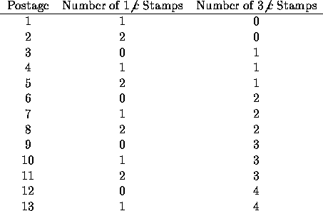

| Stamps and Envelope Size |
Philatelists have collected stamps since long before postal workers were disgruntled. An excess of stamps may be bad news to a country's postal service, but good news to those that collect the excess stamps. The postal service works to minimize the number of stamps needed to provide seamless postage coverage. To this end you have been asked to write a program to assist the postal service.
Envelope size restricts the number of stamps that can be used on one envelope. For example, if 1 cent and 3 cent stamps are available and an envelope can accommodate 5 stamps, all postage from 1 to 13 cents can be ``covered":

Although five 3 cent stamps yields an envelope with 15 cents postage, it is not possible to cover an envelope with 14 cents of stamps using at most five 1 and 3 cent stamps. Since the postal service wants maximal coverage without gaps, the maximal coverage is 13 cents.
The first line of each data set contains the integer S, representing the maximum of stamps that an envelope can accommodate. The second line contains the integer N, representing the number of sets of stamp denominations in the data set. Each of the next N lines contains a set of stamp denominations. The first integer on each line is the number of denominations in the set, followed by a list of stamp denominations, in order from smallest to largest, with each denomination separated from the others by one or more spaces. There will be at most S denominations on each of the N lines. The maximum value of S is 10, the largest stamp denomination is 100, the maximum value of N is 10.
The input is terminated by a data set beginning with zero (S is zero).
Output one line for each data set giving the maximal no-gap coverage followed by the stamp denominations that yield that coverage in the following format:
max coverage = <value> : <denominations>
If more than one set of denominations in a set yields the same maximal no-gap coverage, the set with the fewest number of denominations should be printed (this saves on stamp printing costs). If two sets with the same number of denominations yield the same maximal no-gap coverage, then the set with the lower maximum stamp denomination should be printed. For example, if five stamps fit on an envelope, then stamp sets of 1, 4, 12, 21 and 1, 5, 12, 28 both yield maximal no-gap coverage of 71 cents. The first set would be printed because both sets have the same number of denominations but the first set's largest denomination (21) is lower than that of the second set (28). If multiple sets in a sequence yield the same maximal no-gap coverage, have the same number of denominations, and have equal largest denominations, then any one of the sets is acceptable.
5 2 4 1 4 12 21 4 1 5 12 28 10 2 5 1 7 16 31 88 5 1 15 52 67 99 6 2 3 1 5 8 4 1 5 7 8 0
max coverage = 71 : 1 4 12 21 max coverage = 409 : 1 7 16 31 88 max coverage = 48 : 1 5 7 8